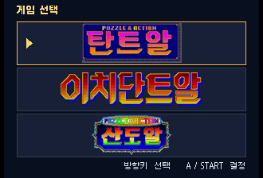
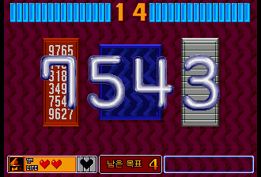
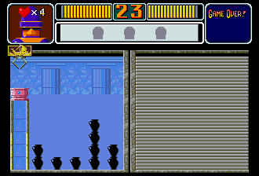
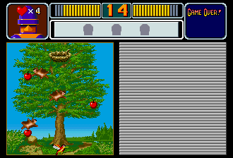
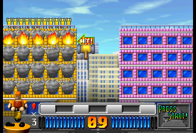
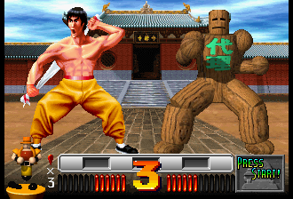

탄트알 · 이치단트알 · 산도알3편 통합 한국어 패치
Puzzle & Action Trilogy
제한 시간 안에 여러 미니게임을 해결하며 적을 넘어서는 퍼즐 & 액션 시리즈입니다. 산도알은 탄트알과 이치단트알에 이어진 세 번째 작품으로, 입체적인 화면과 다양한 과제를 선보입니다.
새턴판에는 미니게임을 연습하는 프리 플레이와 상점에서 아이템을 사는 RPG풍 오리지널 모드도 마련돼 있습니다. 이 한국어 통합판에서는 처음 선택 화면에서 세 편을 골라 실행할 수 있습니다.
각 게임의 한글 이미지와 새 한글 타이틀 로고를 반영했습니다. 이치단트알의 목표달성 글자 깨짐을 수정했고, 산도알의 ‘실크해트’ 표기를 ‘실크모자’로 바꿨습니다.
v0.75 변경사항 · 산도알에서 총으로 동전을 쏴 올리는 게임과 쇠공을 쳐서 박을 터뜨리는 게임의 도전장과 그림 설명을 한글화했습니다. 두 게임의 설명판 네 장을 Beetle Saturn에서 확인했습니다.
패치 적용에는 일본판 산도알(3편) 롬만 있으면 됩니다. 탄트알(1편)·이치단트알(2편) 롬은 필요하지 않습니다.
2do Aru Koto wa Sando R (Japan)의 RAW MODE1/2352 Track 1.bin에 xdelta를 적용하고 Track 2.bin은 그대로 복사합니다. CUE 작성 내용과 정확한 원본 해시, 출력 해시는 ZIP의 readme.txt에 있습니다.
Beetle Saturn에서 새 부팅, 세 게임 선택과 타이틀·일부 플레이 화면을 확인했습니다. 모든 미니게임·분기·엔딩 완주, 실기·다른 에뮬레이터 및 저장 호환성은 검증하지 않았습니다. 기존 강제 저장 상태 대신 새로 부팅하십시오.

게임 플레이 스크린샷 5장









